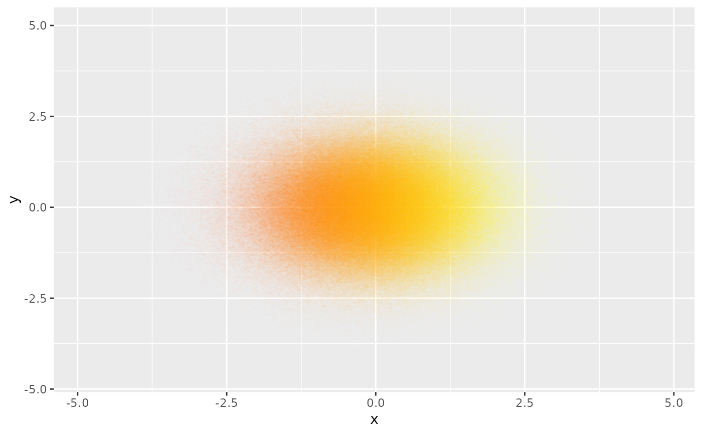

geom_scattermost.RdTotally non-ggplotish version of geom_scattermore(), but faster. It avoids
most of the ggplot processing by bypassing the largest portion of data
around any ggplot functionality, leaving only enough data to set up axes and
limits correctly. If you need to break speed records, use this.
geom_scattermost(
xy,
color = "black",
interpolate = FALSE,
pointsize = 0,
pixels = c(512, 512)
)2-column object with data, as in scattermore().
Color vector (or a single color).
Default FALSE, passed to grid::rasterGrob().
Radius of rasterized point. Use 0 for single pixels (fastest).
Vector with X and Y resolution of the raster, default c(512,512).
library(ggplot2)
library(scattermore)
d <- data.frame(x = rnorm(1000000), y = rnorm(1000000))
x_rng <- range(d$x)
ggplot() +
geom_scattermost(cbind(d$x, d$y),
color = heat.colors(100, alpha = .01)
[1 + 99 * (d$x - x_rng[1]) / diff(x_rng)],
pointsize = 2.5,
pixels = c(1000, 1000),
interpolate = TRUE
)
